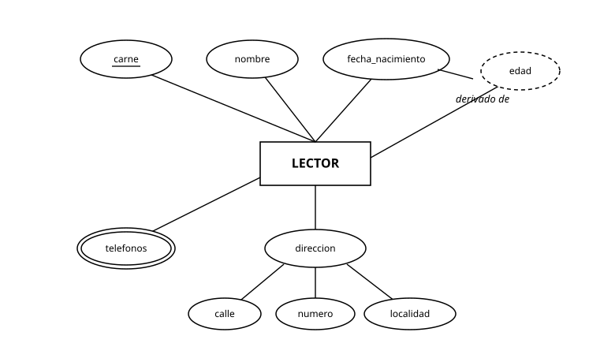
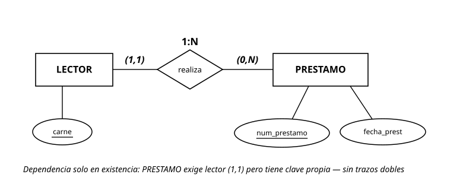
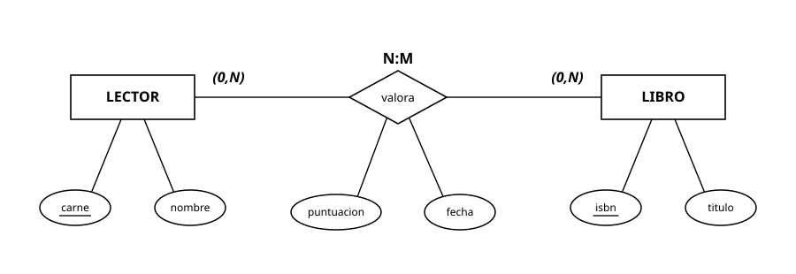
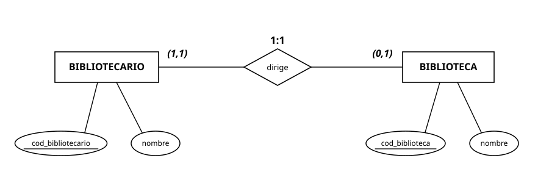
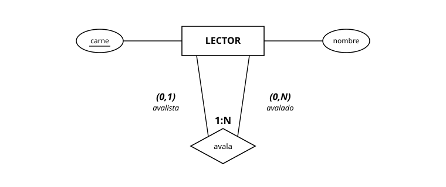
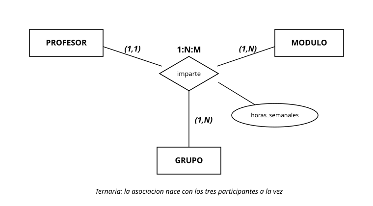
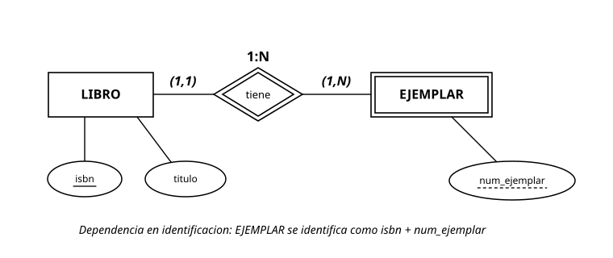
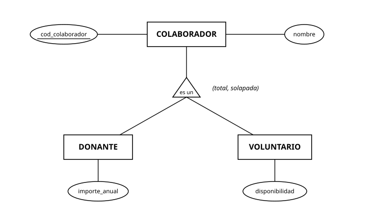
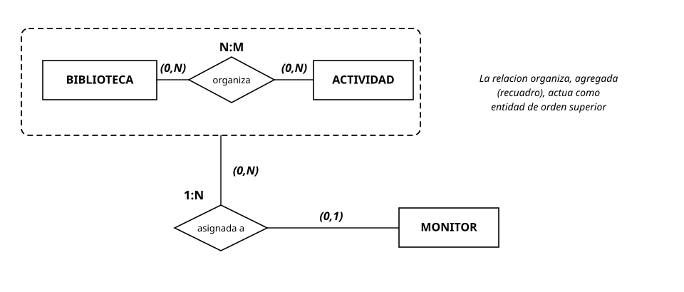
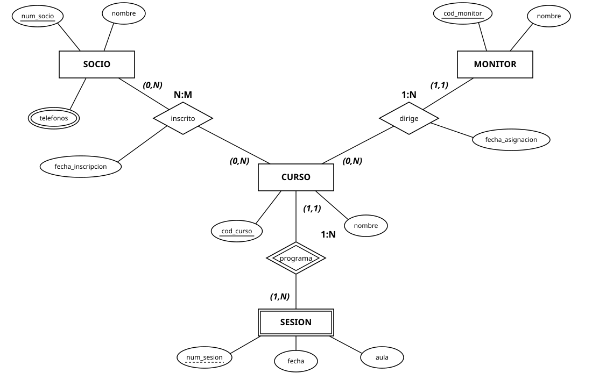

UD3. Modelo relacional y normalización¶
Módulo 0484 — Bases de Datos · 1.º DAW · IES Río Arba · Curso 2026-27 · 24 horas · 1.ª evaluación
Vinculación con el resultado de aprendizaje. Esta unidad completa el RA6: "Diseña modelos relacionales normalizados interpretando diagramas entidad/relación" (RD 686/2010 en la redacción dada por el RD 405/2023). Aquí se evalúan definitivamente los ocho criterios, incluido el RA6.a iniciado en la UD2:
| CE | Qué exige (literal resumido) | Apartado donde se trabaja y evalúa |
|---|---|---|
| RA6.a | Utilizar herramientas gráficas para representar el diseño lógico | Apartado 4 (y entrega de la AE) — consolidación de lo iniciado en UD2 |
| RA6.b | Identificar las tablas del diseño lógico | Apartados 1 y 4 |
| RA6.c | Identificar los campos que forman parte de las tablas | Apartados 1 y 4 |
| RA6.d | Analizar las relaciones entre las tablas | Apartados 2 y 4 |
| RA6.e | Identificar los campos clave | Apartado 2 |
| RA6.f | Aplicar reglas de integridad | Apartado 3 |
| RA6.g | Aplicar reglas de normalización | Apartado 6 |
| RA6.h | Analizar y documentar las restricciones que no pueden plasmarse en el diseño lógico | Apartado 5 |
Al terminar esta unidad sabrás: hablar el idioma del modelo relacional sin mezclarlo con el de las hojas de cálculo; traducir cualquier diagrama E/R —el tuyo de la UD2 incluido— a un esquema de tablas correcto, aplicando la regla adecuada a cada tipo de relación, a las débiles, a las jerarquías y a las agregaciones; elegir y justificar claves primarias y ajenas, y decidir qué debe pasar cuando se borra una fila referenciada; detectar diseños enfermos por sus síntomas y curarlos con la normalización hasta la tercera forma normal; y documentar con oficio lo que ninguna tabla puede vigilar por sí sola.
Entorno de trabajo de la unidad. Seguimos en el nivel lógico: todavía sin MySQL (el DDL llega en la UD5; aquí decidimos qué tablas, no las tecleamos). Herramientas: draw.io o MySQL Workbench para los diagramas lógicos en pata de gallo — aquí se consolida y evalúa el RA6.a — y una notación textual de esquemas que usaremos constantemente:
prestamos(num_prestamo, carne → lectores, isbn, num_ejemplar, fecha_prest, fecha_dev)La clave primaria va en negrita (aquí: num_prestamo), y cada clave ajena lleva una flecha a la tabla a la que apunta. Practica esta notación desde el primer ejercicio: es la taquigrafía profesional de la unidad y la que usarás en el examen.
Apartado 1. El modelo relacional: terminología y reglas del juego¶
Apartado 1.1. La terminología, con su traducción¶
El modelo relacional organiza los datos en relaciones — lo que informalmente llamamos tablas. La terminología formal convive con la informal y debes manejar ambas:
| Término formal | Término informal | Qué es |
|---|---|---|
| Relación | Tabla | El conjunto de datos sobre un mismo tipo de cosa |
| Tupla | Fila (registro) | Cada elemento concreto |
| Atributo | Columna (campo) | Cada propiedad |
| Dominio | — | Conjunto de valores válidos de un atributo |
| Grado | — | Número de atributos de la relación |
| Cardinalidad | — | Número de tuplas (¡ojo!: en la UD2 "cardinalidad" era otra cosa — el contexto desambigua) |
Y la distinción estructural que ordena toda la unidad: el esquema de la relación es su definición (lectores(carne, nombre, telefono) — estable, se diseña una vez) y la instancia es su contenido en un momento dado (las filas de hoy — cambia sin parar). Esta unidad diseña esquemas; las instancias llegarán en las UD siguientes.
Apartado 1.2. Las reglas que la separan de una hoja de cálculo¶
Una relación no es una pestaña de hoja de cálculo con ínfulas. Sus propiedades:
- No hay tuplas duplicadas. Dos filas idénticas son la misma información dicha dos veces: prohibido. (Consecuencia inmediata: toda relación tiene clave — apartado 2.)
- Las tuplas no tienen orden. "La primera fila" no significa nada; si el orden importa (llegada, ranking), es un dato y merece su atributo.
- Los atributos no tienen orden y cada uno tiene nombre único dentro de su relación.
- Los valores son atómicos: en cada celda, un solo valor del dominio. Ni listas ("600111222, 976555444"), ni estructuras. Esta regla es parte de la 1FN (con la regla 1) y la retomaremos en el apartado 6 — los atributos multivalorados de la UD2 chocan exactamente aquí.
- NULL existe y es traicionero. NULL significa "valor desconocido o no aplicable" — no es cero, no es cadena vacía, no es "no". Dos NULL no son iguales entre sí. Decidir qué atributos admiten NULL es una decisión de diseño que se toma en esta unidad y se declara en la UD5.
Ejercicios del apartado.
- E1. Traduce a terminología formal e informal: en
libros, con 6 filas y 4 columnas, indica grado y cardinalidad; señala esquema e instancia; y di qué término de esta tabla chocaría con el significado que "cardinalidad" tenía en la UD2. - E2. Una "tabla" de hoja de cálculo de la biblioteca tiene: filas duplicadas de un mismo préstamo, la columna
telefonoscon "600111222 / 976555444", y las filas ordenadas "por importancia del lector". Señala qué propiedad del apartado 1.2 viola cada cosa y qué transformación la arreglaría. - E3. Para
prestamos(num_prestamo, carne, isbn, num_ejemplar, fecha_prest, fecha_dev): razona atributo a atributo cuáles deberían admitir NULL y cuáles jamás, y explica la diferencia entre "fecha_dev es NULL" y "fecha_dev es la cadena vacía".
Apartado 2. Claves: quién identifica a quién¶
Apartado 2.1. La escalera de claves¶
- Superclave: cualquier conjunto de atributos que identifica sin ambigüedad cada tupla.
{carne}lo es enlectores; también{carne, nombre}— sobrada, pero superclave. - Clave candidata: superclave mínima (si le quitas un atributo, deja de identificar).
{carne}y{dni}son candidatas enlectores;{carne, nombre}no (le sobranombre). - Clave primaria (PK): la candidata elegida para identificar oficialmente. Criterios heredados de la UD2 — conocida siempre, estable, mínima — más uno nuevo del nivel lógico: sin NULL jamás (apartado 3).
- Claves alternativas: las candidatas no elegidas. No se tiran: se declararán únicas en la UD5.
- Clave compuesta: primaria formada por varios atributos. No es un defecto — es la forma natural de las tablas que traducen débiles y N:M (apartado 4).
Apartado 2.2. La clave ajena: el pegamento del modelo¶
Una clave ajena (FK) es un atributo (o conjunto) de una tabla cuyos valores deben existir como clave primaria en otra (o en la misma: reflexivas). Es el mecanismo con el que el modelo relacional materializa las relaciones del E/R: donde la UD2 dibujaba un rombo, aquí habrá una FK — o una tabla con dos.
En la notación de la unidad: ejemplares(isbn → libros, num_ejemplar, estado) — la pareja isbn, num_ejemplar en negrita como PK compuesta, con isbn haciendo doble servicio: parte de la clave propia y ajena hacia libros. Ese doble papel es la firma de las entidades débiles traducidas, y entenderlo ahora te ahorra media UD5.
Matiz que separa niveles: la FK puede admitir NULL cuando la participación era opcional en el E/R — un técnico sin supervisor lleva supervisor a NULL. La mínima (0 o 1) de la UD2 se convierte aquí en una decisión NULL/NOT NULL: las cardinalidades que anotaste con frases ahora legislan.
Ejercicios del apartado.
- E4. En
tecnicos(cod_tecnico, dni, nombre, cod_cuadrilla, supervisor): lista todas las superclaves razonables, identifica las candidatas, elige primaria justificando con los cuatro criterios, y señala las dos claves ajenas presentes con su tabla destino (una es reflexiva). - E5. Escribe en la notación de la unidad el esquema de
valoracionesque traduce la relación N:M valora de la UD2 (figura 2 de aquella unidad) con sus atributospuntuacionyfecha. Justifica por qué su PK debe ser compuesta y qué pasaría con las propiedades del apartado 1.2 si usaras solocarnecomo primaria. - E6. Un compañero propone
dnicomo PK detecnicos"porque nunca se repite". Rebátelo (o dale la razón) usando los cuatro criterios y lo aprendido sobre minimización en la UD1 — y di qué se hace condnisi no es primaria.
Apartado 3. Integridad: las reglas que el gestor vigilará por ti¶
Diseñar es también declarar qué estados de la base de datos son ilegales. Las tres reglas de integridad del modelo (RA6.f) — que en la UD5 se convertirán en cláusulas de MySQL, pero cuya decisión se toma aquí:
- Integridad de entidad: ningún atributo de la clave primaria admite NULL. Una fila sin identidad completa no es identificable — y una tabla con filas no identificables viola el apartado 1.2. Por eso la PK compuesta de
ejemplaresobliga a conocer siempre isbn y número. - Integridad referencial: toda clave ajena, o es NULL (si se permitió), o apunta a una primaria existente. Prohibido el préstamo del carné 999 si no hay lector 999; prohibido el ejemplar de una obra fantasma. Es la regla que mata para siempre las inconsistencias del cuaderno de la UD1.
- Integridad de dominio: cada valor, dentro de su dominio — fechas que son fechas, cantidades no negativas, estados dentro del catálogo permitido. Parte se declara con tipos (UD5) y parte con restricciones de validación; lo que ningún mecanismo cubra pasará a la lista del apartado 5.
La integridad referencial obliga además a decidir qué pasa cuando alguien toca la fila a la que otras apuntan. Y a esa fila le pueden pasar dos cosas distintas, cualquiera de las cuales dejaría claves ajenas apuntando al vacío:
- que se borre — el lector se da de baja —, o
- que se actualice su clave primaria — al lector le cambian el número de carné.
Son dos operaciones y cada una lleva su propia política, que decidirás por separado para cada clave ajena y documentarás en el esquema. Lo que no cambia es el menú: en los dos casos se elige entre las mismas tres políticas.
| Política | Al borrar la fila referenciada | Al actualizar su clave | Al borrar, cuándo suele ser la correcta | Palabra que teclearás (UD5) |
|---|---|---|---|---|
| Rechazar (restringir) | El borrado falla si hay filas que apuntan | El cambio de clave falla si hay filas que apuntan | Lo referenciado tiene historia que debe conservarse (lectores con préstamos) | RESTRICT |
| Propagar (en cascada) | Se borran también las filas que apuntan | Las filas que apuntan reciben la clave nueva | Las hijas no tienen sentido sin el padre (ejemplares de una obra descatalogada, líneas de una factura) | CASCADE |
| Poner a NULL | La FK de las filas que apuntan pasa a NULL | La FK de las filas que apuntan pasa a NULL | La referencia era opcional y lo demás sobrevive (propuestas de compra cuyo autor causa baja) | SET NULL |
La última columna es vocabulario, no sintaxis: son los nombres que MySQL Workbench te mostrará tal cual si lo usas para el diagrama de la actividad evaluativa (junto a NO ACTION, que en MySQL equivale a rechazar). Aquí basta con reconocerlos; en la UD5 los teclearás. La palabra es la misma para las dos operaciones: lo que cambia es si va detrás de ON DELETE (al borrar) o de ON UPDATE (al actualizar) — ON DELETE RESTRICT, ON UPDATE CASCADE.
Las tres políticas al borrar, con filas delante. La biblioteca tiene tres lectores:
| carne | nombre |
|---|---|
| 101 | Marta |
| 102 | Rosa |
| 103 | Jorge |
Rechazar, en prestamos.carne → lectores. Antes (solo las columnas que importan aquí):
| num_prestamo | carne | fecha_prest |
|---|---|---|
| 1 | 101 | 2026-10-01 |
| 2 | 102 | 2026-10-06 |
| 3 | 102 | 2026-10-20 |
Rosa pide la baja y alguien intenta borrar la fila 102 de lectores. Después: nada ha cambiado. El gestor encuentra dos préstamos que apuntan al 102 y rechaza el borrado: Rosa sigue en lectores y sus préstamos, intactos. Darla de baja exigirá decidir antes qué se hace con su historial — y esa decisión ya no es del gestor.
Propagar, en ejemplares.isbn → libros. Antes, libros y ejemplares:
| isbn | titulo |
|---|---|
| 978-84-0000-101-8 | Aves del río Arba |
| 978-84-0000-102-5 | Setas de las Cinco Villas |
| isbn | num_ejemplar | estado |
|---|---|---|
| 978-84-0000-101-8 | 1 | bueno |
| 978-84-0000-101-8 | 2 | regular |
| 978-84-0000-102-5 | 1 | bueno |
Se descataloga Aves del río Arba, que nunca llegó a prestarse: se borra su fila de libros. Después, sus dos ejemplares han desaparecido con ella sin que nadie los borrara uno a uno:
| isbn | titulo |
|---|---|
| 978-84-0000-102-5 | Setas de las Cinco Villas |
| isbn | num_ejemplar | estado |
|---|---|---|
| 978-84-0000-102-5 | 1 | bueno |
Poner a NULL, en propuestas_compra.carne → lectores. La biblioteca recoge propuestas de compra, y las admite anónimas (las del buzón), así que aquí la clave ajena sí admite NULL: propuestas_compra(num_propuesta, titulo, carne → lectores). Antes:
| num_propuesta | titulo | carne |
|---|---|---|
| 1 | Árboles del Moncayo | 102 |
| 2 | Historia del Canal de Tauste | 103 |
| 3 | Recetario de la huerta del Arba | NULL |
Jorge, que no tiene préstamos, pide la baja: se borra la fila 103 de lectores. Después, Jorge ya no está y su propuesta sobrevive sin autor:
| carne | nombre |
|---|---|
| 101 | Marta |
| 102 | Rosa |
| num_propuesta | titulo | carne |
|---|---|---|
| 1 | Árboles del Moncayo | 102 |
| 2 | Historia del Canal de Tauste | NULL |
| 3 | Recetario de la huerta del Arba | NULL |
Dos claves ajenas hacia el mismo lector, cada una con su política. Rosa tiene dos préstamos y una propuesta: a su fila apuntan dos claves ajenas distintas. Si se intenta su baja, prestamos.carne la rechaza — y como el borrado no llega a hacerse, su propuesta tampoco se toca: basta una clave ajena que rechace para detener el borrado entero. La baja de Jorge salió adelante porque lo único que le apuntaba era una propuesta, y esa clave ajena dice "poner a NULL". La política no es de la tabla referenciada: es de cada clave ajena.
La elección nunca es técnica: es de negocio — "¿debe poder borrarse?" y "¿qué debe sobrevivir?" son preguntas para el cliente, y la respuesta se anota junto a cada FK.
Una política al actualizar, con las mismas filas. La biblioteca renumera carnés y el de Rosa pasa del 102 al 202. Sus dos préstamos y su propuesta apuntan a un 102 que va a dejar de existir. Si las dos claves ajenas tienen propagar como política de actualización, el cambio viaja solo:
| Tabla | Fila | carne antes |
carne después |
|---|---|---|---|
lectores |
Rosa | 102 | 202 |
prestamos |
préstamo 2 | 102 | 202 |
prestamos |
préstamo 3 | 102 | 202 |
propuestas_compra |
propuesta 1 | 102 | 202 |
Con rechazar, el cambio de carné habría fallado mientras quedara una sola fila apuntando al 102. Con poner a NULL, la propuesta 1 se habría quedado sin autora — y en prestamos ni siquiera es una opción, porque allí carne no admite NULL. Observa de paso a prestamos.carne: al borrar, rechazar; al actualizar, propagar. Una misma clave ajena, dos operaciones, dos decisiones.
¿Y cada cuánto se modifica la clave referenciada? La respuesta profesional es evitarlo de raíz: una primaria bien elegida no cambia — la estabilidad es uno de los cuatro criterios del apartado 2.1. Por eso la política de actualización (ON UPDATE ..., UD5) es una palanca de emergencia, no una herramienta de diseño: si te descubres necesitándola a menudo, el problema no es la política — es la clave. Un carné que hay que renumerar ya te está diciendo algo. En los esquemas de esta unidad anotarás siempre la política de borrado de cada FK; la de actualización, cuando el enunciado la pida.
Ejercicios del apartado.
- E7. Sobre el esquema de la biblioteca (
lectores,libros,ejemplares,prestamos): pon un ejemplo concreto de violación de cada una de las tres reglas de integridad, con los valores exactos que la provocarían. - E8. Decide y justifica la política de borrado de cada FK del esquema anterior (tres decisiones). Al menos una debe ser distinta de las demás, o tu justificación deberá explicar por qué todas coinciden.
- E9. Un instituto tiene
alumnos,grupos(cod_grupo, tutor → profesores)yprofesores. El profesor tutor de 1.º A se jubila. Analiza qué permite o impide cada política aplicada agrupos.tutor, y cuál elegirías sabiendo que "todo grupo debe tener tutor" es norma del centro — y dónde acaba esa norma si ninguna política la garantiza del todo (pista: apartado 5).
Apartado 4. Del diagrama E/R al esquema relacional¶
Aquí se cosecha la UD2. La traducción es un algoritmo, y su variable de control es la etiqueta de tipo que pusiste sobre cada rombo (apartado 3.4 de la UD2: el tipo se forma con los máximos — te avisamos de que esta regla decidiría la traducción; es ahora).
Apartado 4.1. Entidades y atributos¶
Los cuatro casos de este apartado caben en una figura que ya conoces: el LECTOR de la UD2, con su clave, sus atributos simples, uno compuesto, uno multivalorado y uno derivado.

Figura 1 de la UD2. La entidad LECTOR con todos los tipos de atributo: carne subrayado (clave), nombre y fecha_nacimiento simples, direccion compuesto, telefonos en elipse doble (multivalorado) y edad en elipse punteada (derivado).
Vamos elipse a elipse. Debajo de cada caso, lo que queda en el esquema.
Entidad fuerte → tabla con sus atributos simples; su clave primaria, la elegida en el diagrama. El rectángulo LECTOR se convierte en la tabla lectores, cada elipse simple en una columna y la elipse subrayada en la clave primaria:
lectores(carne, nombre, fecha_nacimiento)
Atributo compuesto → se descompone en sus partes simples (direccion → calle, numero, localidad): la atomicidad del apartado 1.2 no negocia. La elipse direccion no llega a la tabla; llegan las tres que cuelgan de ella, como columnas normales de lectores:
lectores(carne, nombre, fecha_nacimiento, calle, numero, localidad)
Atributo multivalorado → tabla aparte con FK a su entidad y el valor. La señal de alarma de la UD2 explota exactamente aquí, y esta es su solución. Un lector puede tener varios teléfonos y en una celda solo cabe un valor, así que los teléfonos salen de lectores a una tabla propia, con una fila por teléfono:
telefonos_lector(carne→ lectores,telefono)
Qué viaja: carne, la clave del lector, como clave ajena. A dónde: a la tabla nueva. La primaria es la pareja, porque cada fila dice "este lector tiene este teléfono": carne sola no dejaría apuntar un segundo teléfono, y telefono solo impediría que dos hermanos dieran el fijo de casa. Ninguna de las dos columnas admite NULL — son clave (integridad de entidad, apartado 3) —, y un lector sin teléfono es, sencillamente, un lector sin filas en esta tabla.
La tentación: telefono1 y telefono2. Si casi nadie da más de dos teléfonos, ¿por qué no dos columnas en lectores y asunto resuelto? Porque eso es un grupo repetido: el mismo dato, repetido en columnas numeradas. Y la primera forma normal, que verás en el apartado 6.3, es justamente "valores atómicos, sin grupos repetidos y con clave primaria". Además, sale caro:
- fija un máximo artificial: el día que alguien traiga un tercer teléfono, hay que cambiar la tabla;
- deja
telefono2a NULL en todos los que solo tienen uno; - obliga a buscar en varias columnas: para saber de quién es el 600111222 hay que mirar en
telefono1y entelefono2.
No se hace. El multivalorado va a su tabla, tenga dos valores o veinte.
Atributo derivado → no se traduce (no se almacena); se documenta cómo se calcula (apartado 5). edad no es columna de ninguna tabla: se calcula cuando hace falta a partir de fecha_nacimiento, que sí se guarda. Almacenarla sería guardar un dato que caduca solo — cada cumpleaños la dejaría mal.
El LECTOR de la figura, traducido entero:
lectores(carne, nombre, fecha_nacimiento, calle, numero, localidad)telefonos_lector(carne→ lectores,telefono)edadno se almacena: se calcula a partir defecha_nacimiento, y así se anota en la lista del apartado 5.
Apartado 4.2. Relaciones, por su etiqueta de tipo¶
Cada caso sigue el mismo guion: el diagrama, el esquema que sale de él, qué viaja y a dónde, y qué hace la cardinalidad mínima. El reparto es siempre el mismo: los máximos deciden el mecanismo (son la etiqueta de tipo) y los mínimos deciden los NULL.
1:N → la clave del lado uno viaja como FK al lado muchos.

Figura 4 de la UD2. LECTOR (1,1) —realiza— (0,N) PRESTAMO, cada entidad con su clave.
lectores(carne, …)prestamos(num_prestamo, fecha_prest, carne → lectores)
Qué viaja: carne, la clave de LECTOR, que es el lado uno. A dónde: a prestamos, el lado muchos. Cada préstamo es de un solo lector, así que le basta una columna para decir de quién es; al revés no cabría, porque un lector tiene muchos préstamos y "muchos" no cabe en una celda. La mínima que manda sobre la FK es la de la pareja junto al lado uno: aquí es (1,1) — todo préstamo tiene lector — y carne queda NOT NULL; con (0,1) admitiría NULL. La pareja junto al lado muchos, (0,N), no deja huella en ninguna columna: un lector sin préstamos es un lector sin filas en prestamos. Y si fuera (1,N) — "todo lector tiene al menos un préstamo" —, ninguna tabla podría obligarlo: a la lista del apartado 5. Si la relación tenía atributos, viajan con la FK al lado muchos (lo verás en el apartado 4.4).
N:M → tabla intermedia con las dos FK, cuya PK es (normalmente) la pareja; los atributos de la relación viven en ella.

Figura 1 de la UD3. LECTOR —valora— LIBRO, N:M: un lector valora cero o muchos libros y a un libro lo valoran cero o muchos lectores; puntuacion y fecha cuelgan del rombo porque son de la pareja.
lectores(carne, nombre)libros(isbn, titulo)valoraciones(carne→ lectores,isbn→ libros, puntuacion, fecha)
Aquí no hay lado uno al que pedirle la clave: la FK no cabe en lectores (¿cuál de sus libros?) ni en libros (¿cuál de sus lectores?). Viajan las dos claves, y viajan a una tabla nueva, en la que cada fila es una pareja lector-libro. La primaria es esa pareja y, por ser clave, ninguna de las dos FK admite NULL. puntuacion y fecha, que colgaban del rombo, viven en la tabla del rombo. Las mínimas: los dos (0,N) no dejan huella — quien no valora no tiene filas —, y un (1,N) en cualquiera de los dos extremos sería otra regla para la lista del apartado 5. Ninguna otra opción conserva las propiedades del apartado 1.2 — es el motivo profundo por el que la UD2 prohibía "resolver" N:M con multivalorados.
1:1 → FK en uno de los dos lados (única, y NOT NULL si su participación era obligatoria). ¿En cuál? En el lado de participación más obligatoria (menos NULL) o, si empatan, en el que más se consulte desde el otro.

Figura 2 de la UD3. BIBLIOTECARIO (1,1) —dirige— (0,1) BIBLIOTECA: toda biblioteca tiene exactamente un director, y un bibliotecario dirige una biblioteca o ninguna.
bibliotecarios(cod_bibliotecario, nombre)bibliotecas(cod_biblioteca, nombre, director → bibliotecarios)
Con máximo 1 en los dos extremos, la clave podría viajar en cualquiera de los dos sentidos; las mínimas desempatan. En bibliotecas, la columna director nunca queda vacía: el (1,1) junto a BIBLIOTECARIO dice que toda biblioteca tiene director, así que es NOT NULL. Al revés — una columna biblioteca_dirigida en bibliotecarios — estaría a NULL en todos los que no dirigen nada, que son casi todos: es lo que permite el (0,1) junto a BIBLIOTECA. Por eso la clave viaja hacia la tabla en la que nunca va a faltar. Y lleva una segunda marca: única. Sin ella, un mismo bibliotecario podría figurar como director de dos bibliotecas y la relación sería, de hecho, 1:N; la unicidad es lo que la mantiene 1:1 (se declarará en la UD5, como las claves alternativas del apartado 2.1). La FK se llama director y no cod_bibliotecario porque el nombre dice qué papel hace ese bibliotecario en la fila. Si ambas participaciones son totales y las entidades viven y mueren juntas, cabe incluso fusionar en una tabla — decisión a justificar, no a improvisar.
Reflexiva → mismo mecanismo según su tipo, con la FK apuntando a la propia tabla y nombre de rol. El caso de la UD2, el lector que avala a otro lector, con su dibujo:

Figura 3 de la UD3. LECTOR —avala— LECTOR, 1:N con roles: cada lector tiene como mucho un avalista, (0,1), y puede avalar a cero o muchos lectores, (0,N).
lectores(carne, nombre, avalista → lectores)
Es una 1:N como la primera, solo que los dos lados son la misma tabla: viaja carne, y viaja a lectores. Una tabla no puede tener dos columnas con el mismo nombre, así que la FK toma el nombre del rol del lado uno: avalista. Su valor es el carné de otro lector, es decir, la clave de otra fila de la misma tabla. La mínima: el (0,1) junto al rol avalista hace que avalista admita NULL — hay lectores sin avalista, y sin ese NULL no se podría dar de alta ni al primero. Si la reflexiva fuera N:M, haría falta tabla intermedia, con dos FK hacia la misma tabla y cada una con el nombre de su rol.
Ternaria → tabla asociativa con las tres FK (la descomposición que la UD2 te enseñó como formato de entrega era, literalmente, esta traducción).

Figura 7 de la UD2. PROFESOR, MODULO y GRUPO unidos por el rombo imparte, 1:N:M: (1,1) junto a PROFESOR, (1,N) junto a MODULO y (1,N) junto a GRUPO, con horas_semanales en la terna. Las claves, que la figura no dibuja, son cod_profesor, cod_modulo y cod_grupo.
imparticiones(cod_modulo→ modulos,cod_grupo→ grupos, cod_profesor → profesores, horas_semanales)
Viajan las tres claves a una tabla nueva, y el atributo de la terna con ellas. Lo que hay que pensar es la primaria: en una 1:N:M como esta, la forman las claves de los dos lados de máximo N; en una N:M:P, las tres. Aquí el (1,1) junto a PROFESOR dice que un módulo, en un grupo, lo imparte un solo profesor: conocidos el módulo y el grupo, el profesor queda fijado. La primaria es la pareja (cod_modulo, cod_grupo), y cod_profesor se queda fuera de la clave. Es NOT NULL, y no por una mínima: una fila de la ternaria es siempre la terna completa — las tres cosas a la vez, como decía la UD2 —, así que ninguna de las tres FK admite NULL. Si un módulo en un grupo pudiera existir sin profesor, el diagrama no sería una ternaria sino una agregación (apartado 4.3). Con dos filas se ve para qué sirve la primaria:
| cod_modulo | cod_grupo | cod_profesor | horas_semanales | ¿Entra? |
|---|---|---|---|---|
| BD | 1A | P07 | 6 | Sí |
| BD | 1A | P12 | 6 | No: repite la primaria (BD, 1A) |
Con las tres columnas en la clave, la segunda fila habría entrado — y el grupo 1A tendría dos profesores para el mismo módulo, contra lo que dice la figura.
Apartado 4.3. Débiles, jerarquías y agregación¶
Tres construcciones de la UD2 que no son "una relación más": cada una tiene su propia regla de traducción. El guion sigue siendo el mismo: el diagrama, el esquema, qué viaja y a dónde, y qué hace la mínima.
Entidad débil → tabla cuya PK es compuesta: clave del padre (que además es FK) + discriminante.

Figura 3 de la UD2. LIBRO (1,1) —tiene— (1,N) EJEMPLAR: cada ejemplar es de un solo libro, y todo libro tiene al menos un ejemplar. EJEMPLAR es débil: se identifica como isbn + num_ejemplar. El atributo estado del ejemplar no está dibujado.
libros(isbn, titulo)ejemplares(isbn→ libros,num_ejemplar, estado)
Qué viaja: isbn, la clave del padre, al lado muchos — como en cualquier 1:N. La diferencia está en dónde cae: dentro de la primaria. El discriminante num_ejemplar solo distingue ejemplares del mismo libro (el ejemplar 1 existe en cada obra), así que la fila necesita las dos columnas para identificarse, y isbn hace doble papel: clave ajena hacia libros y mitad de la clave primaria de ejemplares. Por ser parte de la primaria, isbn nunca admite NULL — aquí ni siquiera hay que mirar la mínima: un ejemplar sin libro no es que esté prohibido, es que no se puede ni escribir. La (1,N) junto a EJEMPLAR, "todo libro tiene al menos un ejemplar", no la vigila ninguna tabla: a la lista del apartado 5. Borrado del padre: casi siempre propagar — la dependencia en existencia de la UD2, hecha política (lo viste con filas en el apartado 3).
Jerarquía (generalización/especialización) → tres estrategias, y la elección depende de las anotaciones (total/parcial, exclusiva/solapada) que decidiste en la UD2:
| N.º | Estrategia | Otros nombres con los que la encontrarás | Cómo | Encaja bien cuando |
|---|---|---|---|---|
| 1 | Tabla única | integrar los subtipos en el supertipo | Una tabla con todos los atributos + columna tipo; los no aplicables, a NULL |
Pocos atributos propios; consultas casi siempre sobre el conjunto |
| 2 | Tabla del supertipo más una por subtipo | padre e hijas; relación 1:1 entre supertipo y subtipos | Tabla del supertipo + una por subtipo con PK = FK al padre | La general: conserva la jerarquía tal cual; funciona con parcial y con solapada |
| 3 | Solo tablas hija | eliminación del supertipo | Una tabla por subtipo repitiendo los atributos comunes; sin tabla padre | Solo si la jerarquía es total y exclusiva y nadie consulta el conjunto |
Las tres, sobre el mismo diagrama: una asociación cultural con colaboradores que donan, que echan horas, o las dos cosas.

Figura 4 de la UD3. COLABORADOR se especializa en DONANTE y VOLUNTARIO. Total: todo colaborador es al menos una de las dos cosas. Solapada: puede ser las dos.
Estrategia 1, tabla única. Todo a colaboradores: los atributos comunes, los de cada subtipo y la marca de a qué subtipo pertenece cada fila.
colaboradores(cod_colaborador, nombre, es_donante, es_voluntario, importe_anual, disponibilidad)
Qué viaja: los atributos de los subtipos suben a la tabla del supertipo. Fíjate en la marca: con una jerarquía exclusiva bastaría una columna tipo, pero aquí un colaborador puede ser las dos cosas, así que hacen falta dos columnas de sí/no, una por subtipo. Lo que la tabla no puede vigilar: que importe_anual esté relleno exactamente en los donantes y disponibilidad en los voluntarios (a NULL en los demás), ni la totalidad — que toda fila tenga al menos una marca a sí. Las dos, a la lista del apartado 5.
Estrategia 2, tabla del supertipo más una por subtipo. Una tabla por rectángulo del diagrama.
colaboradores(cod_colaborador, nombre)donantes(cod_colaborador→ colaboradores, importe_anual)voluntarios(cod_colaborador→ colaboradores, disponibilidad)
Qué viaja: la clave del supertipo baja a cada tabla hija, donde es a la vez primaria y clave ajena — la misma pieza que la entidad débil, y por eso la FK nunca admite NULL. Cada colaborador tiene su fila en colaboradores; quien dona tiene además una en donantes, quien echa horas una en voluntarios, y quien hace las dos cosas, una en cada una: el solapamiento sale solo. La totalidad, en cambio, sigue sin vigilarla nadie (un colaborador sin fila en ninguna hija no viola ninguna clave ajena): a la lista del apartado 5. Borrado del padre: propagar — sin colaborador no hay donante ni voluntario.
Estrategia 3, solo tablas hija. El supertipo desaparece y cada hija repite los atributos comunes.
donantes(cod_colaborador, nombre, importe_anual)voluntarios(cod_colaborador, nombre, disponibilidad)
Qué viaja: los atributos comunes bajan a cada hija, y no queda tabla de colaboradores. Aquí la jerarquía es solapada, y se nota: quien dona y es voluntario aparece dos veces, con su nombre repetido en dos tablas — la redundancia que el apartado 6 te enseñará a perseguir —, y nadie puede garantizar que las dos copias coincidan. Y para listar a todos los colaboradores hay que juntar dos tablas. Por eso la tabla de arriba la reserva para jerarquías totales y exclusivas: ahí nadie sale repetido y ninguna fila se pierde.
Para esta jerarquía, la elección es la 2: respeta el solapamiento sin duplicar a nadie y conserva el conjunto en colaboradores.
Agregación → la relación agregada se traduce primero (si era N:M, su tabla intermedia); esa tabla, que ya tiene PK propia, recibe las relaciones de la agregación como cualquier entidad.

Figura 6 de la UD2. El recuadro engloba BIBLIOTECA (0,N) —organiza— (0,N) ACTIVIDAD, y ese conjunto se relaciona con MONITOR: (0,1) junto a MONITOR, cada pareja tiene como mucho un monitor y puede no tener ninguno; (0,N) junto al recuadro, un monitor atiende cero o muchas parejas. Las claves, que la figura no dibuja, son cod_biblioteca, cod_actividad y cod_monitor.
Dos pasos, en este orden:
- Lo de dentro del recuadro. organiza es N:M → tabla intermedia, como en el apartado 4.2:
organizaciones(cod_biblioteca→ bibliotecas,cod_actividad→ actividades)- Lo de fuera. asignada a es 1:N entre el recuadro y MONITOR, y la tabla del paso 1 ya tiene primaria: hace de lado muchos como lo haría cualquier entidad. Viaja
cod_monitoraorganizaciones: organizaciones(cod_biblioteca→ bibliotecas,cod_actividad→ actividades, cod_monitor → monitores)
La mínima: el (0,1) junto a MONITOR hace que cod_monitor admita NULL — la pareja biblioteca-actividad existía antes que el monitor, y puede seguir sin él. Es exactamente lo que la ternaria del 4.2 no podía decir: allí la fila es siempre la terna completa. La promesa de la UD2 ("la UD3 lo resuelve con naturalidad") era esto.
Apartado 4.4. Ejemplo resuelto: del diagrama al esquema, decisión a decisión¶
El club deportivo municipal: socios que se inscriben en cursos dirigidos por monitores, con sesiones programadas por curso. El diagrama, en Chen:

Figura 5 de la UD3. El club deportivo completo. Lo que el dibujo dice por sí solo: dirige es 1:N con fecha_asignacion en el rombo, y el (1,1) junto a MONITOR es "todo curso tiene monitor"; inscrito es N:M con fecha_inscripcion en el rombo; SESION es débil de CURSO (rectángulo y rombo dobles, discriminante num_sesion con subrayado discontinuo), y el (1,N) junto a SESION es "todo curso tiene al menos una sesión"; telefonos es multivalorado.
El mismo diagrama en pata de gallo (la débil, con línea continua):
erDiagram
MONITOR ||..o{ CURSO : dirige
SOCIO }o..o{ CURSO : inscrito
CURSO ||--|{ SESION : programa
SOCIO {
int num_socio PK
string nombre
string telefonos "multivalorado"
}
MONITOR {
int cod_monitor PK
string nombre
}
CURSO {
int cod_curso PK
string nombre
}
SESION {
int num_sesion "discriminante"
date fecha
string aula
}Esta notación no dibuja los atributos de las relaciones: fecha_asignacion y fecha_inscripcion hay que leerlas en el enunciado. La débil solo la delata la línea continua de programa, y el discriminante, que no tiene símbolo, hay que anotarlo.
La traducción, narrada con el algoritmo:
- Entidades fuertes (4.1):
socios,monitores,cursos— cada una a su tabla con sus simples y su primaria. - Multivalorado (4.1):
telefonosno cabe en una celda (atomicidad) → tabla aparte con FK al socio y el valor; su PK, la pareja (un socio no repite el mismo teléfono). - dirige, etiqueta 1:N (4.2): la clave del lado uno viaja como FK al lado muchos →
cod_monitorentra encursos, NOT NULL (todo curso tiene monitor: la mínima legisla). Su atributo viaja con la FK:fecha_asignaciontambién acursos. - inscrito, etiqueta N:M (4.2): tabla intermedia con las dos FK; su PK, la pareja; el atributo de la relación vive en ella → nace
inscripciones. - SESION, débil (4.3): PK compuesta = clave del padre (que además es FK) + discriminante → (
cod_curso,num_sesion). La (1,N) junto a SESION — todo curso tiene al menos una sesión — no la vigila ninguna tabla: a la lista RS del apartado 5.
El esquema íntegro, en la notación de entrega (política de borrado justificada en cada FK):
socios(num_socio, nombre)monitores(cod_monitor, nombre)cursos(cod_curso, nombre, cod_monitor → monitores, fecha_asignacion)— borrado de monitor: rechazar (todo curso exige monitor: primero se reasigna, luego se da de baja; la reasignación pendiente, a la lista RS del apartado 5).telefonos_socio(num_socio→ socios,telefono)— borrado de socio: propagar (los teléfonos no sobreviven a su dueño; además, minimización de la UD1: datos de contacto sin titular sobran).inscripciones(num_socio→ socios,cod_curso→ cursos, fecha_inscripcion)— borrado de socio: propagar (baja del club arrastra sus inscripciones); borrado de curso: rechazar (un curso con inscritos no se elimina sin resolverlos antes).sesiones(cod_curso→ cursos,num_sesion, fecha, aula)— borrado de curso: propagar (la dependencia en existencia de la débil, hecha política).
Este es, exactamente, el artefacto que E10 y la actividad evaluativa te pedirán producir por tu cuenta: mismo formato, mismas justificaciones, mismo nivel de detalle.
Ejercicios del apartado.
- E10. Traduce completa la figura 8 de la UD2 (el diagrama Chen de lectura: LECTOR, PRESTAMO, EJEMPLAR débil, LIBRO) a esquema relacional en la notación de la unidad, con políticas de borrado justificadas en cada FK.
- E11. Traduce la jerarquía de la figura 5 de la UD2 (USUARIO, parcial y exclusiva) con las estrategias 1 y 2, escribe ambos esquemas, y justifica cuál elegirías para la biblioteca sabiendo que los préstamos se relacionan con USUARIO. Explica por qué la estrategia 3 queda descartada de entrada en este caso.
- E12. Traduce la agregación de la figura 6 de la UD2 (biblioteca—organiza—actividad, asignada a monitor) con las fechas de inicio y fin de la asignación (ejercicio E20 de la UD2). Señala qué mínima del diagrama se convierte en qué decisión NULL/NOT NULL.
- E13. La escuela de música del E21 de la UD2 tenía una matrícula "por curso". Escribe el esquema de esa asociación en las dos lecturas que allí quedaron abiertas (curso como atributo de la clave de la asociación, o no) y demuestra con un ejemplo de filas concretas qué información pierde la lectura sin curso.
Apartado 5. Restricciones semánticas: lo que las tablas no pueden vigilar¶
Traducido el diagrama, queda un residuo — y ese residuo es materia evaluable (RA6.h): las reglas del negocio que el diseño lógico no puede plasmar. Vienes alimentando esta lista desde el paso 7 del método de la UD2; ahora se convierte en un entregable con forma fija.
Ejemplos de la biblioteca que ninguna tabla, clave ni FK garantiza por sí sola:
- "Un ejemplar no puede tener dos préstamos vivos a la vez."
- "La fecha de devolución, si existe, es posterior a la de préstamo."
- "Un lector con préstamos vencidos no puede llevarse más libros."
- "El jefe de una cuadrilla pertenece a la cuadrilla que dirige" (¿te suena? AE5 de la UD2 — te avisamos de que el diagrama no lo garantizaba).
- Y las derivadas: cómo se calcula edad, que decidimos no almacenar.
Formato de documentación de la unidad (y del examen): cada restricción con código, enunciado en lenguaje natural, tablas y atributos implicados, y mecanismo previsto — algunas caerán en restricciones de validación de la UD5, otras en disparadores de la UD7, otras quedarán en la aplicación; anticipar la casilla correcta puntúa, dejarla en "pendiente de decidir" es honesto y acepta.
RS-03 · "Un ejemplar no puede tener dos préstamos vivos a la vez" ·
prestamos(isbn, num_ejemplar, fecha_dev)· Mecanismo previsto: verificación al insertar (UD7); mientras tanto, procedimiento de mostrador.
La lista de restricciones semánticas forma parte del esquema entregable con el mismo rango que las tablas: un diseño sin su lista es un diseño a medio documentar.
Ejercicios del apartado.
- E14. Clasifica cada regla en su sitio: (a) "la puntuación de una valoración está entre 1 y 5"; (b) "no se presta a quien tiene vencidos"; (c) "todo préstamo pertenece a un lector existente"; (d) "el correo del lector es único". ¿Cuáles son integridad del apartado 3 (y de qué tipo), y cuáles restricciones semánticas del apartado 5?
- E15. Escribe, en el formato RS de la unidad, las tres restricciones de la lista de la biblioteca que consideres más dañinas si se incumplen, ordenadas por daño y con el mecanismo previsto razonado.
- E16. Recupera tu lista de "no capturadas" de la entrega de la escuela de música (E21 de la UD2) y formalízala en formato RS. Si alguna resulta ser, bien mirada, integridad declarable del apartado 3, reclasifícala y explica el porqué.
Apartado 6. Normalización: diagnosticar y curar diseños¶
Apartado 6.1. La enfermedad: redundancia y sus anomalías¶
Cuando el diseño no ha pasado por un buen E/R — o el E/R estaba mal — aparecen tablas como esta (la reconocerás: es el cuaderno de la biblioteca con columnas):
prestamos_todo(carne, nombre, telefono, isbn, titulo, cod_estante, planta_estante, fecha_prest)
Sus síntomas tienen nombre clínico: - Anomalía de modificación: cambiar el teléfono de Rosa exige tocar todas sus filas — y olvidar una crea la inconsistencia de la UD1. - Anomalía de inserción: no puedes dar de alta un lector nuevo sin préstamo (¿qué pones en isbn?) ni catalogar un libro que nadie ha sacado. - Anomalía de borrado: si Marta devuelve su único préstamo y borras la fila, Marta desaparece de la base de datos.
La causa común: hechos distintos conviviendo en la misma tabla (quién es el lector, qué es el libro, qué préstamo hubo). La normalización es el procedimiento que los separa.
Apartado 6.2. Dependencias funcionales: el instrumento de diagnóstico¶
Una dependencia funcional X → Y se lee "X determina Y": conocido el valor de X, el de Y queda fijado. En prestamos_todo: carne → nombre, telefono · isbn → titulo, cod_estante · cod_estante → planta_estante · y la clave (carne, isbn, fecha_prest) → todo. Las dependencias no se inventan mirando los datos de hoy: se deducen del negocio — los datos solo pueden refutarlas, nunca confirmarlas.
Las dos mitades de esa frase, con filas delante.
Los datos pueden refutar. carne → nombre dice que un carné lleva siempre el mismo nombre. Si la hoja trajera estas dos filas (solo las columnas que importan):
| carne | nombre | isbn | fecha_prest |
|---|---|---|---|
| 102 | Rosa | 978-84-0000-101-8 | 2026-10-06 |
| 102 | Lucía | 978-84-0000-103-2 | 2026-10-20 |
la dependencia quedaría refutada en esa hoja: el mismo carné con dos nombres es justo lo que carne → nombre prohíbe. O hay dos lectores con el mismo carné — y entonces el negocio no era como creíamos — o la hoja tiene un error; en los dos casos, se para y se aclara antes de construir nada sobre ella. Una sola fila que contradiga una dependencia basta para tumbarla: ese es el único poder que tienen los datos.
Los datos no pueden confirmar. Una hoja con solo tres préstamos:
| carne | nombre | isbn | titulo | fecha_prest |
|---|---|---|---|---|
| 101 | Marta | 978-84-0000-101-8 | Aves del río Arba | 2026-10-01 |
| 102 | Rosa | 978-84-0000-102-5 | Setas de las Cinco Villas | 2026-10-06 |
| 102 | Rosa | 978-84-0000-103-2 | Recetario de la huerta del Arba | 2026-10-20 |
Cada título aparece una sola vez, así que titulo → carne "se cumple hoy": conocido el título, el lector queda fijado. Nadie diría que el título determina quién se lleva el libro — y mañana, cuando Marta saque Setas de las Cinco Villas, la "dependencia" se cae sola. Que hoy no se repita nada no prueba nada: la dependencia sale del negocio, y la hoja solo puede contradecirla.
Apartado 6.3. Las formas normales, como escalera¶
- 1FN: valores atómicos, sin grupos repetidos y con clave primaria — las reglas 4 y 1 del apartado 1.2 (sin tuplas duplicadas; luego hay clave). Los multivalorados, a su tabla (apartado 4.1). Toda relación auténtica ya está en 1FN; una hoja de cálculo, no siempre.
- 2FN: en 1FN y, además, ningún atributo no clave depende de una parte de la clave (solo importa con claves compuestas). En
prestamos_todo,nombredepende solo decarne(parte de la clave): violación. Cura: extraer el hecho a su tabla — nacelectores. - 3FN: en 2FN y, además, ningún atributo no clave depende de otro atributo no clave (dependencias transitivas). El diagnóstico y la cura, trabajados de principio a fin en el apartado 6.4.
- Formas superiores (mención, bajo una convención que conviene dejar clara): en la práctica profesional, una base de datos se considera normalizada cuando alcanza la 3FN — ese es el objetivo operativo del curso y el alcance mínimo declarado del artefacto. Por encima existen, y basta con reconocer sus nombres: la FNBC, versión estricta de la 3FN para casos con varias claves candidatas solapadas; la 4FN, que ataca las dependencias multivaloradas independientes conviviendo en una misma tabla (dos hechos multivalorados sin relación entre sí, multiplicados en filas); y la 5FN, que trata las dependencias de reunión (tablas solo reconstruibles combinando todas sus piezas a la vez). Ninguna de las tres es exigible en este módulo: se citan para que sus nombres no te asusten en documentación ajena, no para practicarlas.
El procedimiento práctico, que es lo que se examina: (1) lista las dependencias funcionales del enunciado; (2) localiza la que viola la forma normal (¿parcial? ¿transitiva?); (3) extrae el hecho a una tabla nueva con su determinante como clave, dejando una FK; (4) repite hasta 3FN; (5) comprueba que no has perdido información (podrías reconstruir la tabla original combinando las piezas).
Y el cierre del círculo: si haces bien la UD2 y traduces bien el apartado 4, el esquema sale casi normalizado de serie — la normalización es tu control de calidad y tu herramienta de rescate de diseños ajenos, no tu método de diseño principal. No te lo creas por fe: el apartado 6.4 lo demuestra.
Apartado 6.4. Ejemplo resuelto: prestamos_todo, de la hoja enferma a la 3FN¶
La hoja real del mostrador:
prestamos_todo(carne, nombre, telefono, isbn, titulo, cod_estante, planta_estante, fecha_prest)
Esta vez con sus filas, de principio a fin: los mismos datos en cada etapa, para que se vea qué cambia y qué no.
Paso 0 — primero, una relación (1FN). Así la lleva el mostrador: una fila por visita, y el 6 de octubre Rosa se llevó dos libros, que el bibliotecario apuntó en la misma fila separados por una barra. Sin clave declarada: nadie dijo nunca qué identifica a una fila.
| carne | nombre | telefono | isbn | titulo | cod_estante | planta_estante | fecha_prest |
|---|---|---|---|---|---|---|---|
| 101 | Marta | 600111222 | 978-84-0000-101-8 | Aves del río Arba | E1 | 1 | 2026-10-01 |
| 102 | Rosa | 976555444 | 978-84-0000-101-8 / 978-84-0000-102-5 | Aves del río Arba / Setas de las Cinco Villas | E1 / E1 | 1 / 1 | 2026-10-06 |
| 102 | Rosa | 976555444 | 978-84-0000-103-2 | Recetario de la huerta del Arba | E2 | 2 | 2026-10-20 |
Esto todavía no es una relación, así que no está en ninguna forma normal: la segunda fila lleva dos valores en una celda (regla 4 del apartado 1.2) y la hoja no tiene clave (regla 1). La 1FN pide las dos cosas. Cada valor a su celda — la fila de Rosa del 6 de octubre se parte en dos — y la clave declarada: (carne, isbn, fecha_prest), porque un lector no se lleva el mismo libro dos veces el mismo día.
| carne | nombre | telefono | isbn | titulo | cod_estante | planta_estante | fecha_prest |
|---|---|---|---|---|---|---|---|
| 101 | Marta | 600111222 | 978-84-0000-101-8 | Aves del río Arba | E1 | 1 | 2026-10-01 |
| 102 | Rosa | 976555444 | 978-84-0000-101-8 | Aves del río Arba | E1 | 1 | 2026-10-06 |
| 102 | Rosa | 976555444 | 978-84-0000-102-5 | Setas de las Cinco Villas | E1 | 1 | 2026-10-06 |
| 102 | Rosa | 976555444 | 978-84-0000-103-2 | Recetario de la huerta del Arba | E2 | 2 | 2026-10-20 |
Cuatro filas, una relación de verdad. Ya se puede aplicar el procedimiento del apartado 6.3.
Paso 1 — dependencias funcionales (del negocio, no de las filas): carne → nombre, telefono · isbn → titulo, cod_estante · cod_estante → planta_estante · clave: (carne, isbn, fecha_prest) → todo. Las cuatro filas las respetan — lo que no demuestra nada, como vimos en el 6.2; pero si alguna las contradijera, habría que parar aquí.
Paso 2 — localizar violaciones, y verlas doler. Hay de los dos tipos: carne → nombre, telefono e isbn → titulo, cod_estante son dependencias de parte de la clave (violan 2FN); cod_estante → planta_estante es una dependencia entre atributos no clave — la planta no depende del préstamo ni del libro directamente, sino del estante: transitiva (violará 3FN cuando lleguemos). Y las tres anomalías del 6.1, señaladas en las filas de arriba:
- Modificación. El teléfono de Rosa está escrito tres veces (filas 2, 3 y 4). Si cambia de número y se corrige solo la fila 2, Rosa tiene dos teléfonos distintos: la inconsistencia de la UD1.
- Inserción. Jorge (carné 103) se hace socio y todavía no ha sacado nada. No hay fila que escribir:
isbnyfecha_prestson parte de la clave y no pueden quedar vacíos.
| carne | nombre | telefono | isbn | titulo | cod_estante | planta_estante | fecha_prest |
|---|---|---|---|---|---|---|---|
| 103 | Jorge | 650777888 | ¿? | ¿? | ¿? | ¿? | ¿? |
- Borrado. Marta devuelve Aves del río Arba, su único préstamo. Si se borra la fila 1, Marta, su carné y su teléfono desaparecen de la base de datos.
Paso 3 — extraer los hechos parciales. Cada determinante parcial se lleva su hecho a una tabla propia, dejando FK. Cada tabla nueva tiene una fila por valor distinto de su clave: ahí es donde se deja de repetir.
Estado intermedio en 2FN:
- lectores(carne, nombre, telefono)
- libros(isbn, titulo, cod_estante, planta_estante)
- prestamos(carne → lectores, isbn → libros, fecha_prest)
| carne | nombre | telefono |
|---|---|---|
| 101 | Marta | 600111222 |
| 102 | Rosa | 976555444 |
| isbn | titulo | cod_estante | planta_estante |
|---|---|---|---|
| 978-84-0000-101-8 | Aves del río Arba | E1 | 1 |
| 978-84-0000-102-5 | Setas de las Cinco Villas | E1 | 1 |
| 978-84-0000-103-2 | Recetario de la huerta del Arba | E2 | 2 |
| carne | isbn | fecha_prest |
|---|---|---|
| 101 | 978-84-0000-101-8 | 2026-10-01 |
| 102 | 978-84-0000-101-8 | 2026-10-06 |
| 102 | 978-84-0000-102-5 | 2026-10-06 |
| 102 | 978-84-0000-103-2 | 2026-10-20 |
El teléfono de Rosa está ahora en una sola celda. Pero libros arrastra la transitiva, y se ve: la planta del estante E1 está escrita dos veces. Si la biblioteca reordena ese estante a otra planta, hay que tocar los dos libros (anomalía de modificación en miniatura), y un estante vacío no existe en ninguna parte (inserción).
Paso 4 — extraer la transitiva. cod_estante → planta_estante se va a su tabla, con una fila por estante:
Esquema final en 3FN, en la notación de entrega:
- lectores(carne, nombre, telefono)
- estantes(cod_estante, planta_estante)
- libros(isbn, titulo, cod_estante → estantes)
- prestamos(carne → lectores, isbn → libros, fecha_prest)
| carne | nombre | telefono |
|---|---|---|
| 101 | Marta | 600111222 |
| 102 | Rosa | 976555444 |
| cod_estante | planta_estante |
|---|---|
| E1 | 1 |
| E2 | 2 |
| isbn | titulo | cod_estante |
|---|---|---|
| 978-84-0000-101-8 | Aves del río Arba | E1 |
| 978-84-0000-102-5 | Setas de las Cinco Villas | E1 |
| 978-84-0000-103-2 | Recetario de la huerta del Arba | E2 |
| carne | isbn | fecha_prest |
|---|---|---|
| 101 | 978-84-0000-101-8 | 2026-10-01 |
| 102 | 978-84-0000-101-8 | 2026-10-06 |
| 102 | 978-84-0000-102-5 | 2026-10-06 |
| 102 | 978-84-0000-103-2 | 2026-10-20 |
Cada hecho, en una tabla; cada dato, escrito una vez.
Paso 5 — comprobación de no-pérdida. Combinando prestamos con lectores (por carne), con libros (por isbn) y, a través de libros, con estantes (por cod_estante), se reconstruye exactamente cada fila de la 1FN:
| carne | nombre | telefono | isbn | titulo | cod_estante | planta_estante | fecha_prest |
|---|---|---|---|---|---|---|---|
| 101 | Marta | 600111222 | 978-84-0000-101-8 | Aves del río Arba | E1 | 1 | 2026-10-01 |
| 102 | Rosa | 976555444 | 978-84-0000-101-8 | Aves del río Arba | E1 | 1 | 2026-10-06 |
| 102 | Rosa | 976555444 | 978-84-0000-102-5 | Setas de las Cinco Villas | E1 | 1 | 2026-10-06 |
| 102 | Rosa | 976555444 | 978-84-0000-103-2 | Recetario de la huerta del Arba | E2 | 2 | 2026-10-20 |
Las mismas cuatro filas: ninguna información se ha perdido — solo ha dejado de repetirse. Y las tres anomalías del paso 2, curadas con filas nuevas (marcadas como tales):
- Inserción, ahora sí. Jorge entra en
lectoressin ningún préstamo; ninguna clave se lo impide.
| carne | nombre | telefono | |
|---|---|---|---|
| 101 | Marta | 600111222 | |
| 102 | Rosa | 976555444 | |
| 103 | Jorge | 650777888 | fila nueva |
- Borrado, ahora sí. Marta devuelve su libro: desaparece su fila de
prestamos, y Marta sigue enlectores.
| carne | isbn | fecha_prest | |
|---|---|---|---|
| 102 | 978-84-0000-101-8 | 2026-10-06 | |
| 102 | 978-84-0000-102-5 | 2026-10-06 | |
| 102 | 978-84-0000-103-2 | 2026-10-20 |
- Modificación, ahora sí. Rosa cambia de teléfono: una celda, y ya está en todas partes, porque solo hay una.
| carne | nombre | telefono | |
|---|---|---|---|
| 101 | Marta | 600111222 | |
| 102 | Rosa | 976000111 | celda cambiada |
| 103 | Jorge | 650777888 |
El cierre del círculo, demostrado. Ahora traduce mentalmente con el apartado 4 el E/R evidente de este dominio — LECTOR y LIBRO fuertes, ESTANTE como entidad (un libro está en un estante: 1:N), realiza/es objeto de alrededor del préstamo: obtienes este mismo esquema salvo dos decisiones que la hoja no podía tomar porque no tenía esa información: el E/R de la unidad da al préstamo su propio número (num_prestamo, apartado 2.1) en vez de la clave compuesta (carne, isbn, fecha_prest), y distingue el EJEMPLAR, débil de LIBRO, que la hoja del mostrador no apunta. Lectores, libros y estantes salen iguales por las dos rutas; préstamos guarda la misma información, con su propia clave, sin haber normalizado nada. Diseñar bien y normalizar convergen en el mismo sitio; la diferencia es que el buen E/R llega a la primera y la normalización llega rescatando. Las dos rutas debes dominarlas — los exámenes y la vida traen de las dos.
Ejercicios del apartado.
- E17. La clínica veterinaria municipal apunta cada visita en una hoja plana:
visitas_todo(cod_mascota, nombre_mascota, especie, nombre_dueno, telefono_dueno, fecha_visita, cod_veterinario, nombre_veterinario, diagnostico). Escribe sus dependencias funcionales, provoca con filas concretas una anomalía de cada tipo (modificación, inserción, borrado), y normaliza hasta 3FN mostrando el paso 2FN intermedio en la notación de entrega. - E18.
matriculas(cod_alumno, cod_modulo, nombre_modulo, curso, nota, tutor_grupo)con las dependencias razonables de un instituto: identifica en qué forma normal está, qué dependencia viola la siguiente, y normaliza justificando cada extracción. - E19. Diagnóstico inverso: un esquema en 3FN de la biblioteca se "desnormaliza" fusionando
libroseejemplares"para hacer menos consultas". Describe qué anomalías reaparecen exactamente y qué preguntas de negocio se vuelven peligrosas de responder. - E20. ¿Verdadero o falso, con contraejemplo o justificación?: (a) "toda tabla con clave simple está en 2FN"; (b) "una tabla con dos columnas siempre está en 3FN"; (c) "si los datos actuales no repiten nada, la tabla está normalizada".
Apartado 7. Errores frecuentes¶
- Traducir N:M con una FK y rezar. Meter
isbnenlectores(¿cuál de sus libros?) o listas en una celda (viola 1FN). N:M = tabla intermedia, sin excepciones. - Olvidar el doble papel de la clave del padre en las débiles.
ejemplaressin queisbnsea FK, o con unid_ejemplarinventado que rompe la identificación decidida en el E/R. Si cambias la decisión, cámbiala en el diagrama, no de tapadillo en las tablas. - FK sin política de borrado. "Ya lo decidiré" = lo decidirá el gestor por ti con su valor por defecto, y no te va a gustar en producción. Cada flecha de tu esquema lleva su política anotada.
- Elegir PK "bonita" en la intermedia. Añadir
id_valoracionautonumérico y dejar sin proteger la pareja (carne, isbn): permite valorar dos veces el mismo libro. Si añades clave artificial, la pareja queda como alternativa única — o no añadas. - Normalizar mirando los datos. "No veo repeticiones" no demuestra nada (apartado 6.2): las dependencias salen del negocio. Y el recíproco: desnormalizar "por rendimiento" en 1.º es optimizar un problema que no tienes — el rendimiento de verdad se estudia en la UD4 con instrumentos, no con corazonadas.
- Lista de restricciones semánticas vacía. Ningún dominio real tiene cero reglas fuera del esquema. Lista vacía = análisis sin terminar, y así se corrige.
Apartado 8. La IA en esta unidad¶
La regla de siempre: el resultado es tuyo y lo defiendes tú.
- Usos razonables aquí: generar tablas de práctica con anomalías para diagnosticarlas; pedir enunciados extra de traducción E/R→relacional; contrastar tu lista de dependencias funcionales describiéndole el negocio (no los datos).
- Lo que debes verificar siempre: las traducciones y normalizaciones que un asistente te proponga. Los fallos típicos de los modelos de IA en esta materia son exactamente los del apartado 7 — claves artificiales que desprotegen parejas, políticas de borrado omitidas, "3FN" declaradas sin comprobar la transitiva — y llegan con seguridad absoluta. Audita contra el procedimiento del apartado 6.3, paso a paso.
- Lo que se te pedirá defender: en la defensa se te pedirá derivar, no recitar: "¿por qué esta tabla existe?", "¿qué dependencia rompía la 2FN aquí?", "¿qué pasa si borro este lector?". Un esquema que no sabes derivar desde su diagrama y sus dependencias se considera no propio, con las consecuencias que fija la programación.
Apartado 9. Actividad evaluativa final¶
Contexto. La empresa comarcal de mantenimiento de parques renovables de la UD2 — 15 parques, 450 activos, 5.000 sensores, 60 técnicos en cuadrillas, órdenes preventivas y correctivas, intervenciones con consumo de repuestos, contratas homologadas por parque con supervisor asignable. Tu materia prima es el diagrama que ensamblaste en la AE10 de la UD2 (con las correcciones que recibiera): esta actividad lo convierte en esquema relacional completo. Donde tu diagrama tomara una decisión distinta de la canónica (p. ej., SENSOR fuerte en la AE4), traduce tu decisión con coherencia — se corrige la traducción, no la decisión ya evaluada.
Instrucciones. 10 ejercicios, 1 punto cada uno, etiquetados con el CE oficial del RA6 que evalúan. Esquemas en la notación textual de la unidad (PK en negrita, FK con flecha); el diagrama lógico final (AE10), con herramienta. Tiempo estimado: 2 horas más el acabado del diagrama. Entrega: documento + archivo fuente y exportación del diagrama, por la tarea de Classroom. Defensa oral obligatoria, 4-5 minutos por persona; sin defensa no puntúa.
- AE1
[RA6.b]Identifica y enumera todas las tablas que tu diagrama produce al traducirse, indicando para cada una de qué elemento del E/R procede (entidad fuerte, débil, N:M, multivalorado, jerarquía, agregación). Sin escribir aún los campos: el mapa antes que el territorio. - AE2
[RA6.c]Escribe el esquema completo deparques,activos,tecnicosycuadrillasen la notación de la unidad, con todos sus campos (los del contexto más los razonables), marcando PK y FK. - AE3
[RA6.d]Analiza por escrito cómo ha quedado plasmada cada relación de tu diagrama: para cada rombo del E/R, di qué mecanismo la traduce (FK en qué tabla, o tabla intermedia) y por qué su etiqueta de tipo obligaba a ese mecanismo. - AE4
[RA6.e]Justifica las claves de los tres casos delicados: la PK desensoressegún tu decisión de AE4 de la UD2 (compuesta si débil, propia si fuerte — y qué queda como alternativa), la PK de la tabla de consumos de repuestos, y la reflexiva o doble relación del jefe de cuadrilla. - AE5
[RA6.f]Declara la política de borrado y modificación de cada FK de tu esquema (tabla de FKs con política y justificación de negocio en una línea). Señala razonadamente el caso más discutible. - AE6
[RA6.d]Traduce la jerarquía de órdenes de trabajo (preventiva/correctiva, total y exclusiva según la AE6 de la UD2) con dos de las tres estrategias del apartado 4.3, y elige una para la empresa justificando con sus consultas previsibles (el jefe de mantenimiento pregunta casi siempre por "órdenes", a secas). - AE7
[RA6.d]Traduce la agregación de contratas (AE9 de la UD2): esquema de la tabla de homologaciones y de la asignación de supervisor, con la mínima "(0,1) — puede no haber supervisor" convertida en su decisión NULL exacta. - AE8
[RA6.g]La oficina central usaba esta hoja:partes_todo(cod_intervencion, fecha, cod_orden, tipo_orden, cod_activo, nombre_parque, cod_tecnico, nombre_tecnico, cod_repuesto, descripcion_repuesto, cantidad). Escribe sus dependencias funcionales, di en qué forma normal está, y normalízala hasta 3FN mostrando el paso intermedio — comprueba que aterriza en (un subconjunto de) tu esquema. - AE9
[RA6.h]Entrega la lista consolidada de restricciones semánticas del sistema en formato RS (mínimo seis, incluidas las heredadas de tus listas de la UD2: jefe-pertenece-a-su-cuadrilla, cantidades positivas, correctiva-exige-avería…), cada una con su mecanismo previsto. - AE10
[RA6.a]Entrega el diagrama lógico completo del esquema final con herramienta (draw.io o MySQL Workbench, pata de gallo): todas las tablas con sus campos, PK marcadas, FKs como líneas con sus cardinalidades, identificativas en trazo continuo. Formato de entrega doble de la guía de draw.io (fuente + exportación). Este diagrama es la evaluación definitiva del criterio de herramienta iniciado en la UD2 — y tu plano de construcción para la UD5.
Apartado 10. Para ampliar¶
- Manual de referencia de MySQL — uso de claves ajenas — cómo se declararán en la UD5 las políticas que has decidido aquí.
- Documentación de modelado de MySQL Workbench — la alternativa profesional a draw.io para el diagrama lógico de la AE10.
- Guía rápida de draw.io para las entregas de diagramas — convención de nombrado y formato de entrega doble.